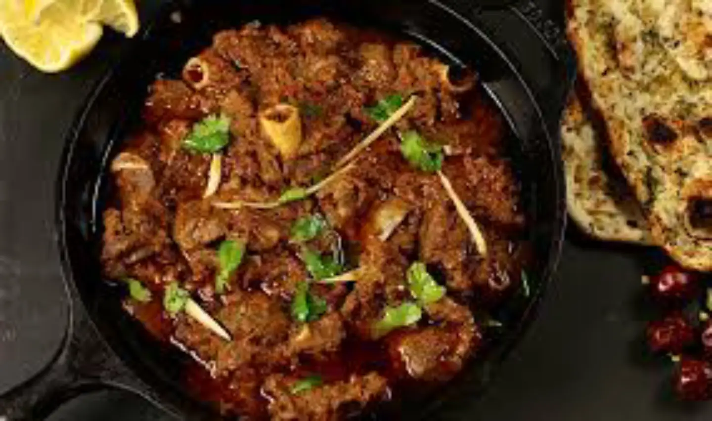

Mutton Karahi Recipe

Yield:
3
Cook Time:
1 Hour 30 Minutes
Total Time:
1 Hour 30 Minutes
There are some dishes in Pakistani cuisine that really don’t need an introduction.
Biryani, Pilau,
Korma… they all speak for themselves. A good mutton Karahi also comes in
this elite category. Often found on the menus of dhabbas and
all around Pakistan, served on special occasions and get-togethers,
Karahi is just the epitome of good Pakistani food.
Ingredients
- 1/2 cup oil or ghee
- 500g lamb or mutton, bone in preferably
- 600g tomatoes, finely chopped or pureed
- bulb garlic, minced
- 1 thumb sized chunk of ginger, minced
- 2 tsp salt, or to taste
- 2tsp paprika or kashmiri red chilli powder
- 1.5tsp black pepper
- 1tsp chilli flakes
- 0.5 tsp cumin powder
- 0.5 tsp coriander powder
- 1tsp onion seeds (kalonji, optional)
- 2 green chillis, slit in half if you like your Karahi hot
- 0.5 bunch coriander, chopped
- Ginger cut into matchsticks, as much as desired

Instructions
Step.1
- Heat up your oil/ghee in a wok, cast iron skillet
or karahi.
Add the lamb/mutton and fry on high,
stirring
constantly until all the meat has changed
its colour

Step.2
- Add the minced ginger and garlic and give
this a quick fry,
until the raw smell goes away.
Don't allow the ginger and garlic to colour too much

Step.3
- Add all the spices and 1/1.5 cups of water for lamb
and 2.5/3 cups of water for mutton. Bring to a boil,
then turn the heat down to low and put to lid on.
Simmer for 1hr for lamb and 2hrs for mutton.
Keep checking during this time to ensure there
is sufficient water and top up a little as and if required

Step.4
- Once the simmer time is up, the meat should be
80% done and there shouldn't be much water in the pan.
The pan will look quite oily
(remember, you can
remove the oil at the end if you want!)

Step.5
- Turn the heat to high. Add the tomatoes.
Let this cook on high, stirring constantly
and scraping the bottom of the pan.The tomatoes
will release A LOT of moisture. Keep stirring
and just allow everything to concentrate

Step.6
- Once the gravy (masala) looks wet but
almost done and the oil is beginning to come
to the surface, add in the chopped coriander
and green chilli. Turn the heat to low and
allow this to simmer without the lid on for 5 minutes

Step.7
- Garnish with additional chopped coriander
and the matchstick-cut ginger
* Here is your Delicious Mutton Karahi *

Hope you Enjoyed the Recipe
Make & Taste this Recipe and let us know how it was
Stay Safe! Stay Healthy
Social Media
Whatsapp
Facebook
Instgram
Other Recipes
Chicken Korma
Chilli Chicken
Chicken Manchurian
Chicken Chettinad
Chicken Handi
Creamy Tuscan Chicken
Chicken Cacciatore
Chicken Tikka Masala
^
^
Top